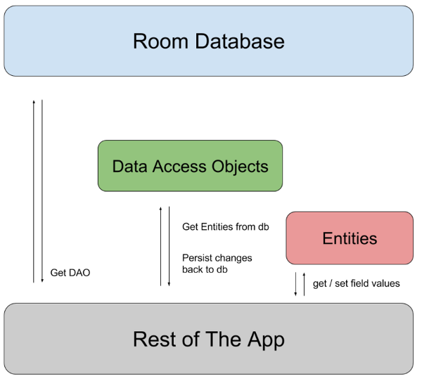

Room Persistence Library
Table of Contents
1. Android.Room
Although SQLiteOpenHelper is powerful, but we still need to write template codes, and lacks compile-time SQL grammar check. Thus, Room is introduced.
1.1. Setup
We need to include relevant dependencies in build.gradle.
1.2. Primary Components ATTACH
There are 3 components in Room:
- Database class holds the database and serves as the main access point for the underlying connection to app’s persisted data.
- Data entities that represent tables in app’s database.
- Data access objects (DAOs) that provide methods that app can use to query, update, insert and delete data in the database.

1.3. Sample Implementation
1.3.1. Data Entity
Data entity acts as tables in app’s database. Each instance represents a row in the table (default, table name is the same name but lowercased)
@Entity
data class User(
@PrimaryKey val uid: Int,
@ColumnInfo(name = "first_name") val firstName: String?,
@ColumnInfo(name = "last_name") val lastName: String?
)
Or in Java,
@Entity
public class User {
@PrimaryKey
public int uid;
@ColumnInfo(name="first_name")
public String firstName;
@ColumnInfo(name="last_name")
public String lastName;
}
1.3.2. Data Access Object (DAO)
UserDAO provides the methods that the rest of the app uses to interact with data in the user table.
@Dao
interface UserDao {
@Query("SELECT * FROM user")
fun getAll(): List<User>
@Query("SELECT * FROM user WHERE uid IN (:userIds)")
fun loadAllByIds(userIds: IntArray): List<User>
@Query("SELECT * FROM user WHERE first_name LIKE :first AND" +
"last_name LIKE :last LIMIT 1")
fun findByName(first: String, last: String): User
@Insert
fun insertAll(vararg users: User)
@Delete
fun delete(user: User)
}
1.3.3. Database
Then, we need a AppDatabase class to hold the database that defines the database configuration and is the main access point to persisted data.
- The class must be annotated with
@Databasenotation that includes anentitiesarray that lists all of the data entities associated with the database. - The class must be an abstract class that extends
RoomDatabase - For each DAO class is associated with the database, the DB class must define an abstract method that has 0 arguments and returns an instance of the DAO class.
@Database(entities = [User::class], version = 1)
abstract class AppDatabase : RoomDatabase() {
abstract fun userDAO(): UserDao
}
1.3.4. Usage
To use the DB, we first create an instance of the DB:
val db = Room.databaseBuilder(
applicationContext,
AppDatabase::class.java, "database-name"
).build()
Then, we can use the abstract method to get the instance of DAO. Then, we can use the methods from the DAO to interact with the database.
val userDao = db.userDAO()
val users: List<User> = userDao.getAll()